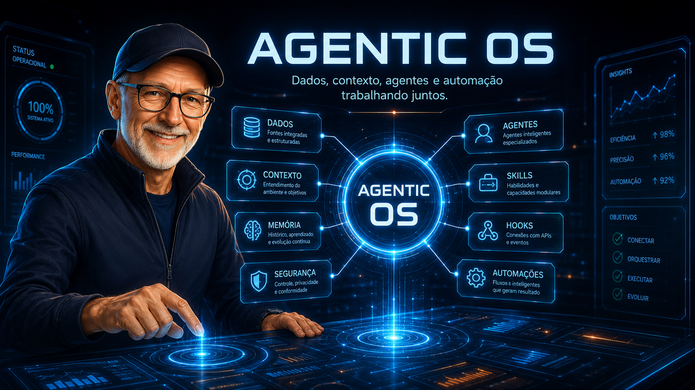
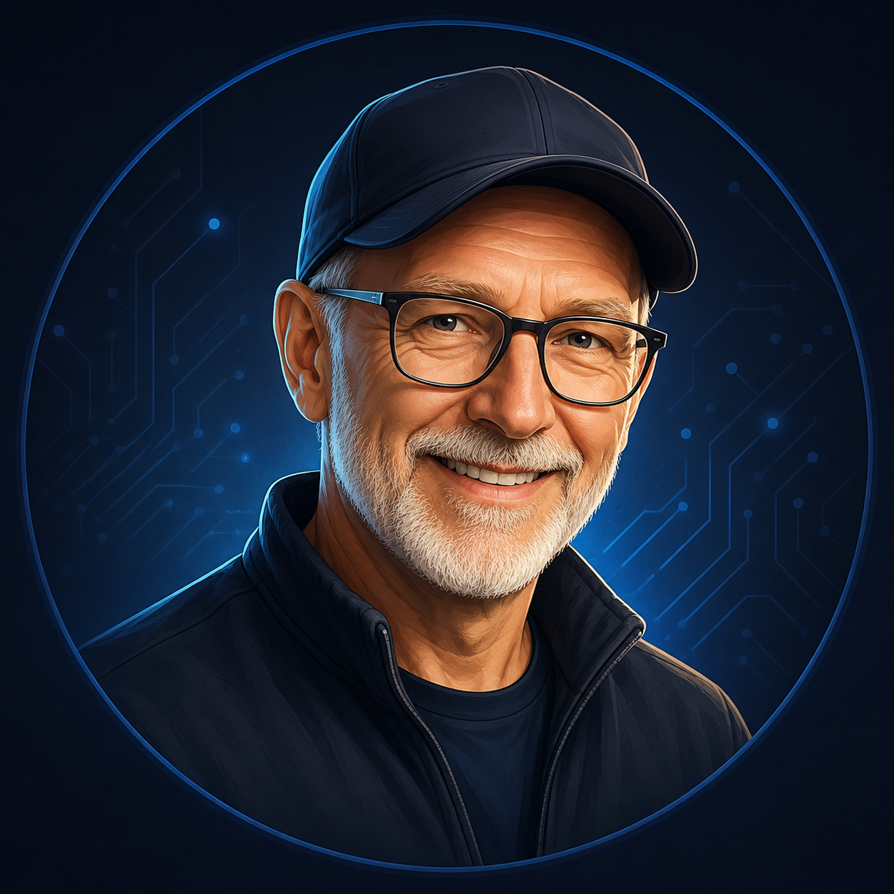

O sistema operacional do trabalho com IA
Enquanto todo mundo ensina Claude Code como ferramenta, este curso ensina Claude Code, Codex e os agentes do futuro como sistema operacional. Do caos das ferramentas à arquitetura de agentes — alinhado com Karpathy, Anthropic, MCP, A2A e o estado-da-arte de 2026.

Software 1.0 escreveu código. Software 2.0 treinou redes. Software 3.0 programa LLMs com prompts, contexto, ferramentas, memória e instruções. — Andrej Karpathy, Sequoia Ascent 2026
Quer organizar seu negócio para a IA operar — não pra fazer prompt bonito.
Implementa IA pra clientes e quer um framework próprio, com método nomeado.
Quer dominar a stack agêntica do estado-da-arte: MCP, A2A, hooks, skills, orquestração.
O curso é progressivo: empreendedor pode parar na T4 e já ter valor. Consultor vai até T5. Builder fecha na T6.
Cada trilha cobre uma camada do sistema operacional agêntico. Da filosofia à implantação real.
A tese das camadas, Software 3.0, jagged intelligence, as 3 personas e o método PRATO.
CLAUDE.md, AGENTS.md (padrão multi-vendor), regras de escopo, governança como first-class citizen.
Silver Platters, Pantry/Prep/Plate, Skills, MCP, Context Engineering e memória como filesystem.
Orquestrador (90,2% melhor), chief-of-staff pattern, subagents, A2A e padrões cross-framework.
Hooks como interrupts, n8n e Make como linguagens, Computer Use, observabilidade e segurança.
Casos reais (Marco/Sally/Sana), Managed Agents, plano de 30 dias e projeto final.

O INEMA é um espaço para profissionais que querem operar negócio com IA — não consumi-la como espectador. A comunidade inema.vip reúne empreendedores, consultores e builders que estão construindo a próxima geração de operações com agentes.
Este curso é a porta de entrada: gratuito, técnico e direto. Se ressoar, você encontra a comunidade depois — e, mais à frente, as imersões de implantação.
Cada trilha referencia material primário do estado-da-arte de 2025-2026. Sem achismo — só fontes que importam.
Agentic engineering como disciplina profissional
Padrões fundamentais — orchestrator, workers, evaluator
Disciplina nova além de prompt engineering
97M downloads/mês — TCP/IP da era agêntica
Protocolo agente-a-agente, complementar ao MCP
Padrão multi-vendor de identidade de agente